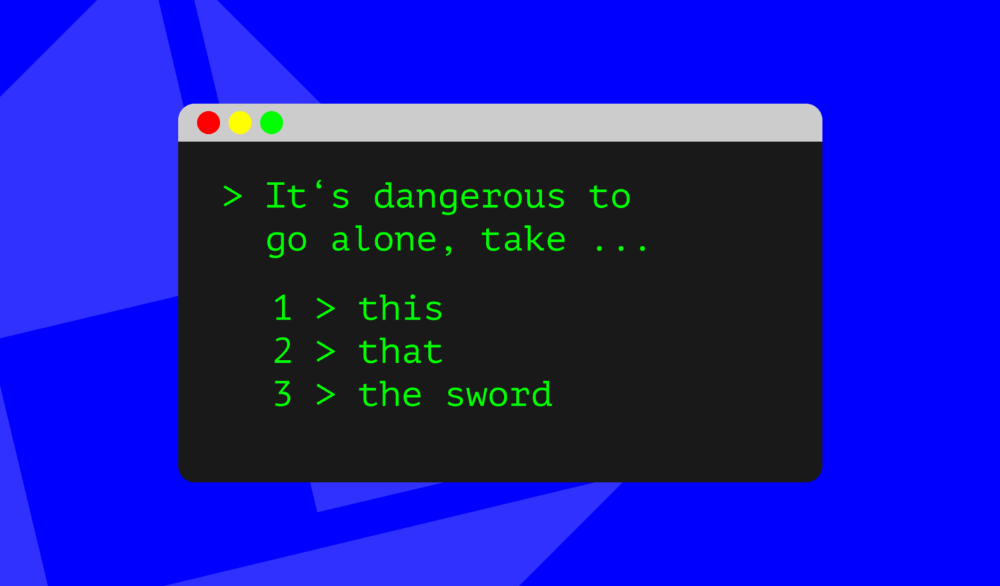

Overview

This project is made in groups and the goal is to create a text adventure game in a group. I am with Steffen, and the
text adventure game will be made with . The game itself will be an adventure through an abandoned island after being
left stranded on a prisoner ship; the goal with being to survive long enough to escape.
End Users
For our end users, we would like to have them be teens around the age of 13 - 16 who enjoy fictional novels/ books who want to make them interactive. For our end users to
enjoy our game, we are making it a thrilling and action packed interactive to keep their attention span up as teens have been shown to have horrendous attention spans.
Also, we want them to play this game through simple and not too long story for when they feel bored or need to do something quickly to keep their dopamine up.
Requirements
Simple and Understandable
Story is straightforward with no unnecessary plot twists
Simple words for the story/ plot
Interactive and Dopamine activating
The game is fair and justifiable challenging
Easter eggs found in different playthroughs
Game is not that long
Challenging and Thrilling
The enemies are “scary”
Game can be replayed in many different ways
The game is fair and justifiable challenging
Replayability
Different ways to win the game
RNG/ random dependent events
Fair RNG based events
Implications
Aesthetics
Aesthetics is about making the outcome look and feel good.
This is quite challenging and confusing for a Text Adventure game where the game is just a bunch of text to interact with, but we want our game to be different.
We will achieve this by having Ascii art to help visually narrate the story for us. The Ascii art should be appropriate at the right time of the story. This will also
help us achieve our goal of making the enemies "scary." Another way we can make it aesthetically pleasing is to change the color of the text during the story. The different
colors will help visually tell us the mood of what the narration or the text is trying to imply and say to the user. This helps the user feel more engaged with the game and feel
more attentive and interactive.
Functionality
Functionality is about ensuring the outcome works as its meant to.
To achieve this goal, we will test our python code through peer feedback from several other people. This will ensure there is randomness of the events during the testing and we
can find parts of the game that we would have not found ourselves. We will do these several times as well in order to double check and confirm the Functionality. For our game,
we want to have a multichoice system and through this, we want to make sure that the Functionality of this multichoice system works flawlessly. We can achieve this by doing the
testing of the code over and over again as previously mentioned. We also mentioned a randomizer system for the game. We must make sure this works by testing it (over
and over again) and to check the probability of the randomness.
Usability
Usability is about making the outcome easy to use.
So for our game, we want it to be as simple as possible with easy instructions. To achieve this, we will make the instructions, narration and text as clear as possible. This ensures
that our end users can understand our game. We also said to make it as simple as possible, so we will create a multichoice system so there are no unneccessary guessing on what you can
and can't do in our game.